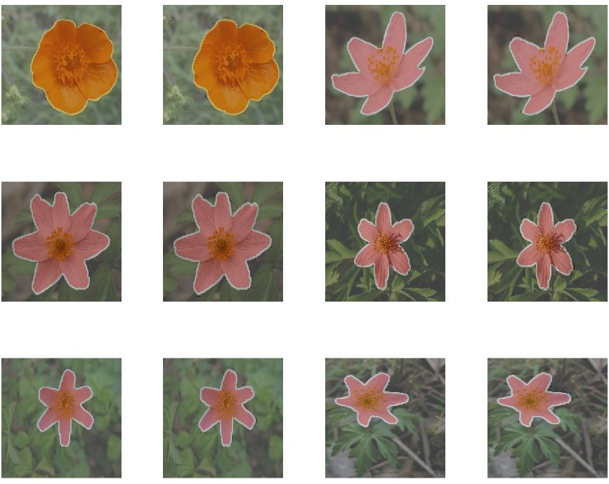
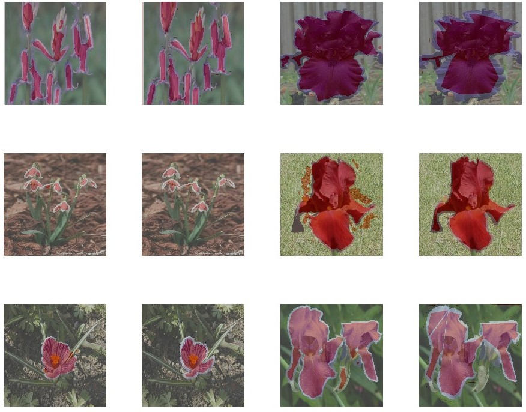
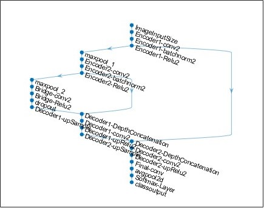

My Projects
Check out some of the exciting projects I've been working on in the technology field.
# Flower Segmentation by Deep Learning
Tool(s) Used: Matlab // Year 2024
Flower image segmentation presents a unique challenge due to the complexity of their shapes and colors.
I explored two approaches for this task: transfer learning and constructing a deep learning model from scratch using a U-Net architecture. My goal was to accurately segment flowers from their backgrounds by training on the Oxford Flower dataset.
I employed transfer learning with pre-trained models such as DeepLab v3+ and GoogLeNet.
MATLAB made this process convenient, offering built-in models and an easy-to-use preview of the architecture. However, a significant challenge I faced was the training time, primarily due to the limitations of my laptop’s processing power. I was unable to train models with more than three
layers efficiently. Here are some of my results.

Best performing images

Worst performing images

Architecture of U-net
# GeoFence Tracker
Tool(s) Used: Andriod Studio, Java // Year 2023
Github Repo Link
A simple application that allows users
to track their walking path, record their steps, mark locations using
Google map API. It also features a statistics section where users can
view their walking trends,
with tracking available even when the app is not open.
Best performing images
Worst performing images
# Cooking Recipe Chatbot
Tool(s) Used: Python // Year 2023
Best performing images
Worst performing images
# Dancing Game - Dance For Me
Tool(s) Used: Unity, C# ,Python // Year 2022
Github Repo Link
Dance for Me is a group project and an interactive AR game
where players copy 3D model dance moves and get instant feedback using Mediapipe.
It's designed to get desk-bound computer scientists up and moving in University of Nottingham. I worked as a front-end lead :>!
Best performing images
Worst performing images
hello
Check out some of the exciting projects I've been working on in the technology field. From coding
challenges to personal experiments, I'm always eager to learn and innovate.
Education
I graduated in University of Nottingham, here are some courses I studied.
Others
Other than sitting in front of computer ...
# Crocheting ❤
Crocheting is my recent hobby as I was finding my way to train my patience and make clothes for my plushies, sometimes it is quite irritating
when I lost my count but what an achievement when finished!
# Drawing ❤
I have always loved drawing since I was small. It helps me express my feelings (I remember always writing this sentence in my English assignments, but it's true!). Growing up made me stop drawing for a while,
but now I've picked up my pen again. I even opened an Instagram account to share some of the cartoon characters I draw!